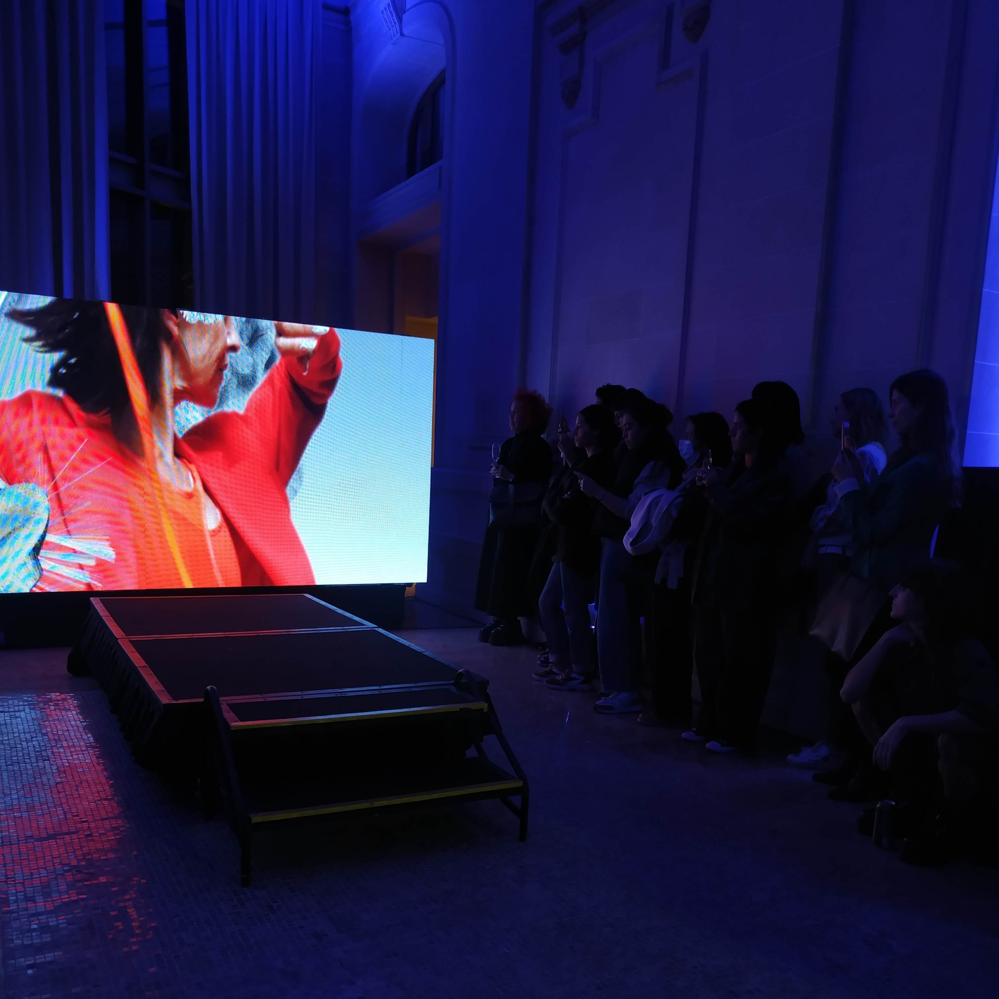

Entre contrastes y convicciones: Clara Aguayo

Tras repetidas reprogramaciones por mudanza de por medio, eventos pop up, un lanzamiento en puertas y un taller que además de sostener el proceso creativo de una nueva colección sostiene las cuentas propias de un “Palacio”, pudimos coincidir en una conversación hermosa y honesta con la diseñadora local Clara Aguayo. Su palabra no es cosa de juegos, en sus términos, es “todo o nada” y desde el momento que asomamos la posibilidad remota de una cita para escribir acerca de su carrera y proyectos obtuvimos un sí.
Clara
Si hay algo que habla bastante de la marca homónima de esta diseñadora de moda, es conocerla a ella como persona. Lo primero que viene a nuestra mente, en la medida que surge el encuentro es que no puede haber nombre más acertado para transmitir semejante convicción y pasión. Desde muy niña, Clara sabía que su destino sería uno al que pudiera arribar por el camino creativo, y cualquier test de vocación que se topó en su adolescencia vino a confirmarlo tantas veces como fue necesario, Diseño y Arquitectura eran las apuestas. Del espíritu creativo, supimos que fue manifiesto desde temprana edad entre relevés y pliés, hasta que a los 18 años tocó elegir entre el Diseño y una carrera prometedora en Ballet, el primer gran hito de un evidente llamado del alma.
Su carrera ha estado cargada de una intencionalidad extraordinaria, “sin expectativas”pero “sin minimizar”las oportunidades, diciendo que sí con miedo y aventurándose a codearse con los grandes, en diferentes instancias internacionales la diseñadora ganó una perspectiva que el paisito todavía no le brindaba. Luego de haber ganado en 2016 el icónico concurso que llevaba por nombre Lúmina, resultó becada en un curso en Milán de Marketing de Moda, una experiencia que si bien gratificante, fue develando el espíritu de lo que sería después una marca que levanta la mano para decir “no estoy de acuerdo”. Clara no está dispuesta a los atajos, para sacar provecho, “sólo hay una forma de hacer las cosas y es bien” y el marketing le contó en buena medida, todo lo que NO quería ser y hacer.
Más tarde tras otra jugada de confianza, se apunta a un concurso organizado por el British Fashion Council, el London College y el Somerset House, donde entre más de 700 participantes, seleccionaron un selecto grupo de talentos emergentes de tan sólo 16, y la uruguaya se ganó su plaza, entre un conjunto de los más diversos orígenes; Vietnam, Canadá, India, Colombia y Brasil, por nombrar algunos. Esta experiencia no sólo enriqueció su carrera como diseñadora tras diversos cursos y encuentros con referentes del área que se prolongaron por hasta 2 años de cursos a distancia y una residencia artística de unos 10 días en Londres, sino que además fueron la cuna de varias de sus revelaciones más preciadas, la de la perspectiva de “la libertad que da la humildad” y el entender que “el éxito no es glamuroso”, que detrás de proyectos de gran renombre sigue habiendo personas contrariadas entre las pasarelas, los aplausos, sus miedos y ansiedades.
El camino de merecer: Un camino Swevy
Reconocer su rol en la moda, definir sus ritmos y encontrar su brillo, fue un proceso que surgió en paralelo a las oportunidades de formación internacional que vivió la diseñadora uruguaya, no todo fue un camino de rosas. De su trabajo con la referente y pionera de moda lenta Ana Livni, se quedó con el gusto por la confección In house. De la construcción de marca para quién fue su pareja estable por años, Nacho Sarubbe, la revelación de reconocerse más tarde con miedo de brillar por sí misma. Y de una sociedad fallida, y su primera marca Estudio Null, la necesidad de construcción de una marca identitaria y humana.
Es así como, al descubrirse en la fortuna de estar viva en medio de una pandemia y tras las pausas autorreflexivas propias de la cuarentena, aún con un desamor a cuestas que le trastocó su proyecto de vida hasta entonces, se halló sin casa, sin trabajo, pero con la convicción intacta de que estaba hecha para el diseño y así bastaron dos máquinas industriales en el fondo de la casa de sus padres, un modelo de campera a medida y una seña para el arranque. Aquello se volvió en el combustible de una marca que en 5 meses podría permitirse moverse a la locación de sus sueños, “El Palacio”, donde empezaría a concebir colecciones enteras:
Water me (2021)
La (no) colección; un trench, una pijama, una biker y un corset deportivo, son ese conjunto de piezas que no esperarías ver integradas en un concepto, pero Water me pudo eso y más. Bajo la consigna de placer, poder y confort, Water me (Agua yo) “son esas prendas que nunca llegan al ropero. Del cuerpo al sillón. Del sillón al cuerpo. Del cuerpo al lavarropas y de nuevo al cuerpo”.
MoWeek: La furia y la ternura (LFYLT)
Es probable que ninguna otra paradoja haya podido definir mejor lo que representó la propuesta de Clara Aguayo como diseñadora invitada y estandarte de la edición de MoWeek en abril de 2022.
Los diseños de esta propuesta danzan en esa dualidad que habita en su nombre: LFYLT. Según uno de los post del lanzamiento en Instagram, esta concepción "surgió de pensar qué pasaría si nuestros estados emocionales se manifestaran externamente sin poder controlarlos"
La furia y la ternura lo tiene TODO, y es para todos; pantalones de sastre y joggers, tops y tapados, buzos y bombers, vestidos y monos, colores sólidos y estampados, neutros y gradientes, cintas, argollas y cuellos peludos.
Swevy
La más reciente colección también producida como imagen de MoWeek para la edición de primavera verano 2022-2023, es otra representación de los contrastes que se atraviesan en el camino de emprender, algo bastante más personal para Aguayo y que habla de lo “tan suave y extremadamente heavy” que ha sido el proceso de su creación de marca. Esta incluye: poncho para la playa, conjuntos de ensueño, vestidos y jumpers, la bomber Aguayo reversionada con lo mejor de dos mundos, pañuelos, faldas pareo y siempre más. Colaboración de accesorios, intervención artesanal para los estampados y una larga cadena de ¡wows!, son la carta de presentación de una colección que hace un guiño a los icónicos estampados en corrosivo de la Clara que se presentaba en Londres Fashion Week en febrero de 2019.
Su equipo y sus redes: sociales y de contención.
El lugar donde ocurre la magia es el Palacio, una casa de altos en Cordón Sur, allí está el taller y showroom de la marca. En este espacio, si bien hay un equipo que la contiene desde lo operativo (cortes, escalado y confección), allí también se viven los embates de la humanidad de cada una de las que hacen parte, mientras enarbolan la bandera de Slow and contemporary fashion, algo que parece simple y sofisticado cuando se dice, pero no lo es, del todo.
Clara no romantiza el emprendimiento, aunque ama lo que hace. Su comunicación en redes como marca es muy personal y franca, y así nos comenta el día que no puede más de lo exhausta o cuando su asistente de corte se resfría y se atrasan los pedidos, que en condición normal toman entre 20 a 30 días hábiles.
No tiene tapujos en mostrar que es hora del baño en la tina con burbujas, pero también se toma muy en serio el acontecer socio político y cultural que enmarca su trabajo, defiende lo que cree y atraviesa temas como el rol de la mujer en la moda, expone sus posiciones políticas sin excusarse por ello, y siempre hace suyos los argumentos de Fashion Revolution como causa.
En su proceso de formación, Aguayo no sólo hizo Diseño, sino que también se recibió en la UTU, donde aprendió el oficio con sus propias manos; es así como, ha tenido oportunidad de vivir lo que ella llama “la poesía de la materialización”, para ella es tan importante el diseño detrás, como las manos que lo traen a la vida. En sus palabras “separar la prenda del artesano es una violación” por eso atesora y respeta tanto a cada eslabón de su cadena de producción y colaboradores.
En sus redes, si bien siempre da la cara, rara vez nos habla a la cámara, aunque sí se permite modelar sus looks con frecuencia. Su comunicación suele ser por escrito, avisa cuando está disponible para tomar más encargos, cuando los pedidos ya están listos y cada tanto alguna liquidación express: prendas que surgen en el proceso creativo antes del diseño definitivo, o encargos de particulares que no se retiraron.
Disfruta la cercanía con sus seguidores, y es de esas tareas que aún no concibe delegar. Sin embargo, ha aprendido a reconocer sus límites porque casi 10000 seguidores genuinos demandan una gran atención. Porque sí, Clara se auto reconoce no sólo como la Directora de Marca sino también como su propio cadete, sabe que su talón de Aquiles es que su amor por lo que hace puede mutar en prácticas obsesivas, pero el tiempo y la experiencia le ha mostrado que vivir de su pasión no puede ser de ninguna manera “flagelante” y que “el esfuerzo no es una meta en sí misma”. Entonces, este último año empezó a expandir su red de apoyo, con miras al futuro: una coach que la acompaña emocionalmente y una contadora que se ocupa de la parte no tan divertida de su trabajo (al menos para ella); hacer las cuentas, estimar costos, etc.
El próximo escalón para la marca de moda lenta uruguaya es apuntar a la internacionalización y ya su directora empieza a tomar importantes decisiones en torno a ello, empezando por priorizar su energía y su salud mental, para dirigir y hacer crecer al equipo.
Es innegable que la elocuencia de Clara Aguayo se evidencia en el diseño y la que ella reconoce como su mayor virtud no escapa a la vista de nadie, ese poder de transformación tanto de lo bello como del dolor. Su capacidad de conmoverse con todo lo que habita entre los extremos se vive en cada concepto y pieza. Prendas para todos los cuerpos y géneros, que se balancean entre la elegancia y la comodidad como premisa, es su voz.
Vestir el nombre Clara Aguayo, es la responsabilidad de trasladar a la pasarela de lo cotidiano la pasión que transmiten sus prendas y sus ideas. Esta diseñadora nos incita a mucho más que vestir la moda, nos convoca a repensarla y con ello, a nosotros mismos como parte del todo que la integra, una invitación a #todoloquesí.
* Cada una de las citas entre comillas y en letra cursiva, son palabras literales de la diseñadora Clara Aguayo, durante el desarrollo de la entrevista que respaldó la información de este artículo.
Clara Aguayo
V: ¿Una emoción?
C: Profundidad
V: ¿Un signo del zodíaco?
C: Escorpio
V: ¿Una textura?
C: Terciopelo
V: ¿Una App?
C: Be Real
V: ¿Memes o stickers?
C: Memes
V: ¿Fotos o notas de voz?
C: Fotos
V: ¿Lugar favorito de la ciudad?
C: El balcón de casa
V: ¿Perros o gatos?
C: Gatos
V: ¿Leer o películas?
C: Películas
V: ¿Con azúcar o edulcorante?
C: Ninguno
V: Si pudiera ser una bebida…
C: Bumble Bee (un trago)
V: ¿Cena de viernes?
C: Comida Peruana
V: Al despertar…
C: Mis mantras
V: Nunca sales de casa sin…
C: Lápiz de labio
V: ¿Vacaciones soñadas?
C: Grecia con mi hermana
V: ¿Team invierno o verano?
C: Invierno
V: Plan ideal de domingo
C: Salir de copas